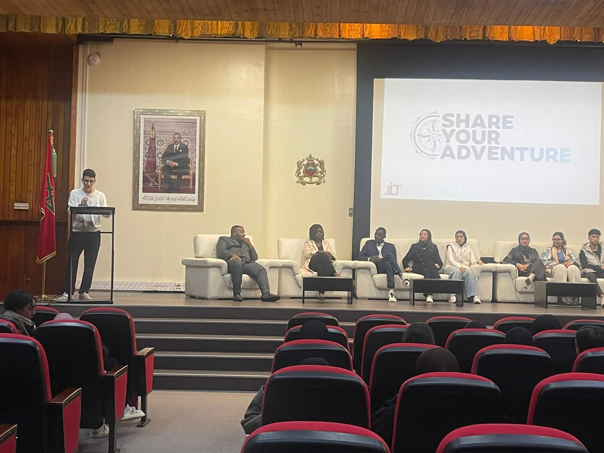
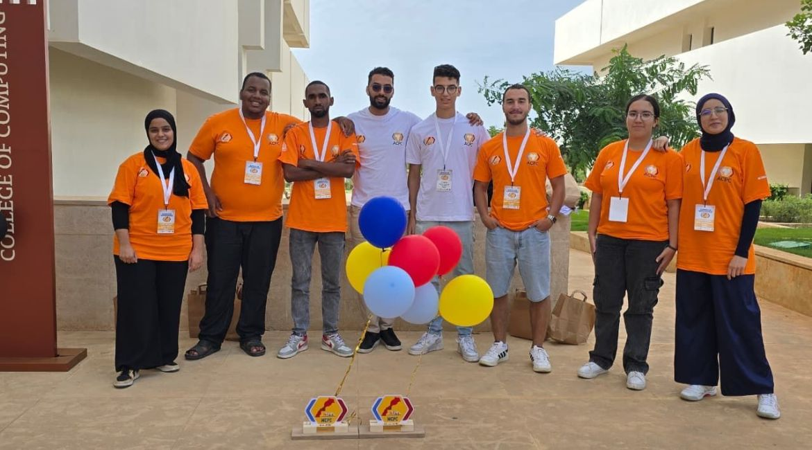
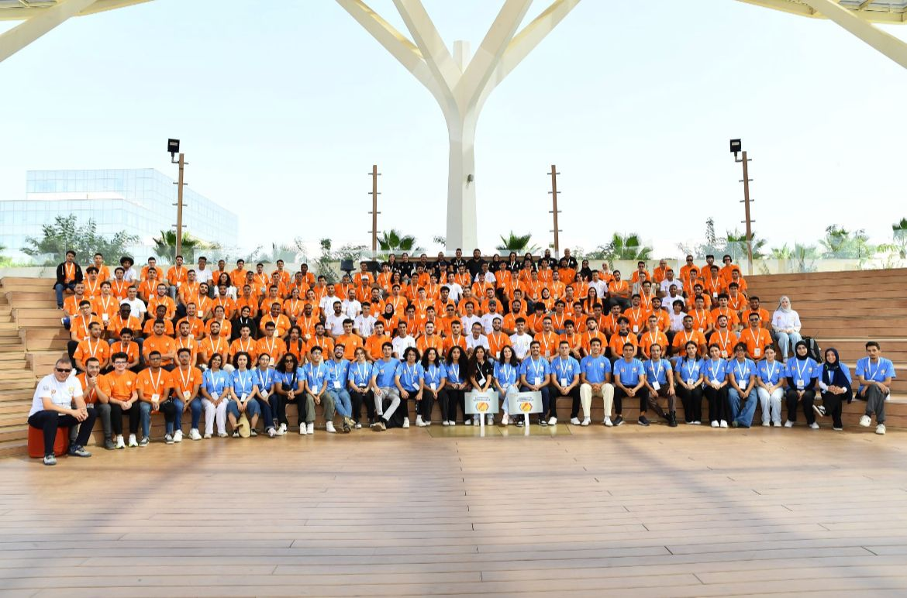
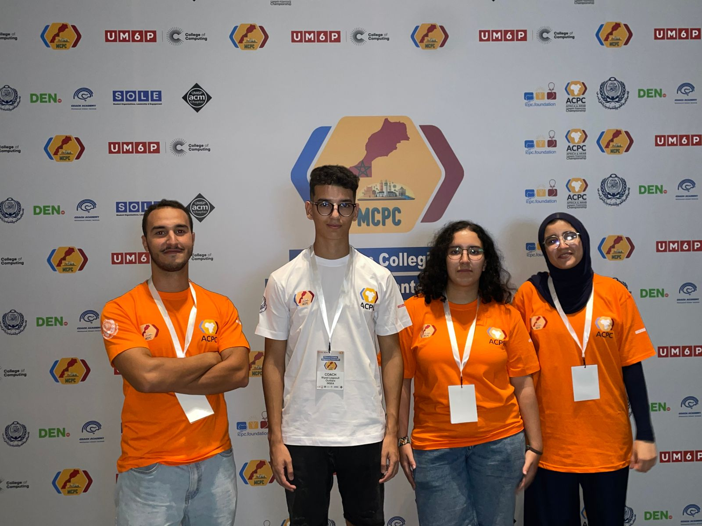
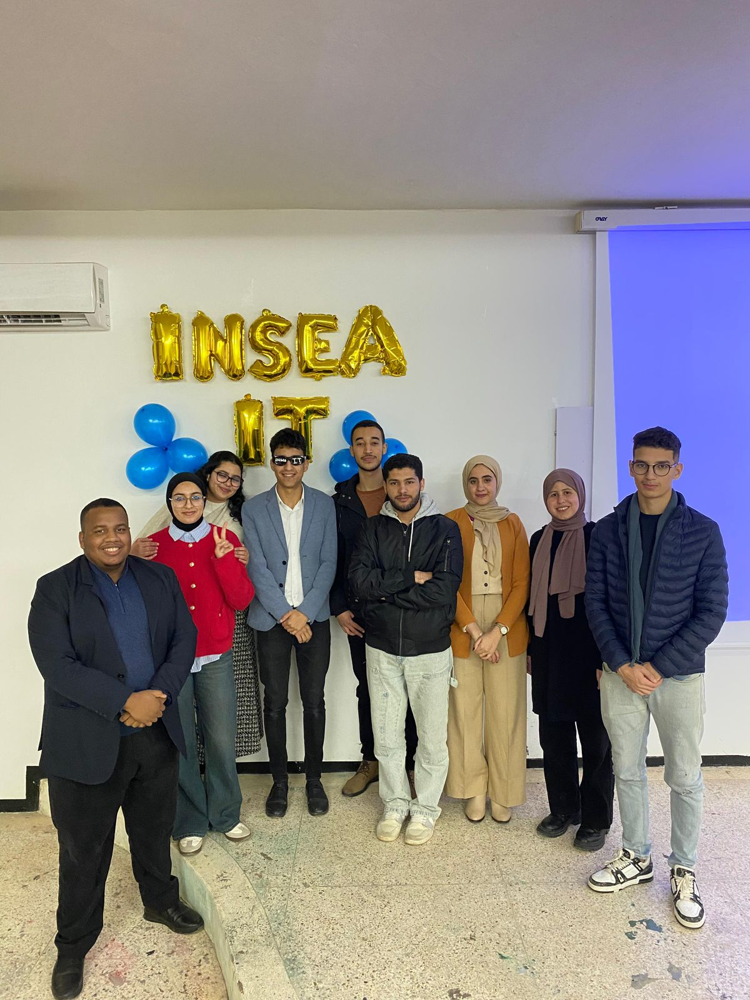
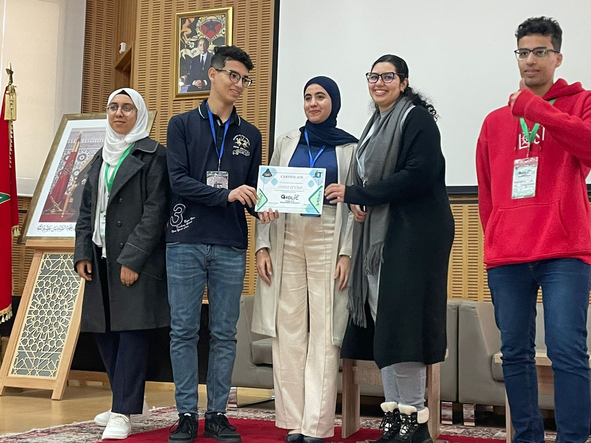
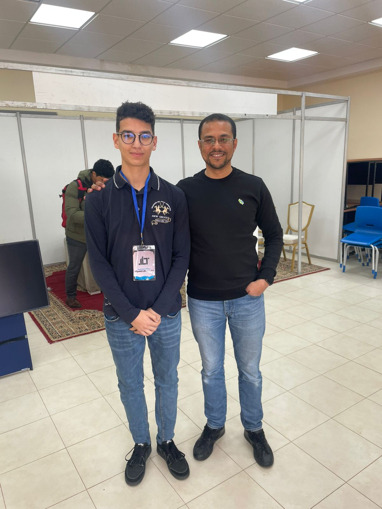

Data Science Engineering Student @ INSEA Rabat
Passionate about Artificial Intelligence and Statistical Modeling. Currently a 2nd-year Data Science Engineering student at INSEA – Rabat. Experienced in building Machine Learning and Deep Learning pipelines (NLP, forecasting) with a focus on designing and optimizing predictive models.
July 2025 | Fès-Meknès Regional Direction
January - August 2023
Text classification using TF-IDF and BERT embeddings (Transformers).
View on GitHubInteractive Power BI dashboard analyzing Yahoo Finance data.
View on GitHubQuarterly time series analysis and forecasting in Paris.
View on GitHubApplied linear regression techniques for survival analysis.
View on GitHubPresident of the INSEA IT Club: Managing the club and leading the "IT Academy" (Workshops on LLMs, Web Dev). Successfully negotiated 100 DataCamp licenses and coordinated certified Deep Learning workshops with NVIDIA ambassadors.
Personal Email: riadlag2004@gmail.com
Academic Email: rlagzouli@insea.ac.ma
LinkedIn:Riyad Lagzouli
Location: Rabat, Morocco






